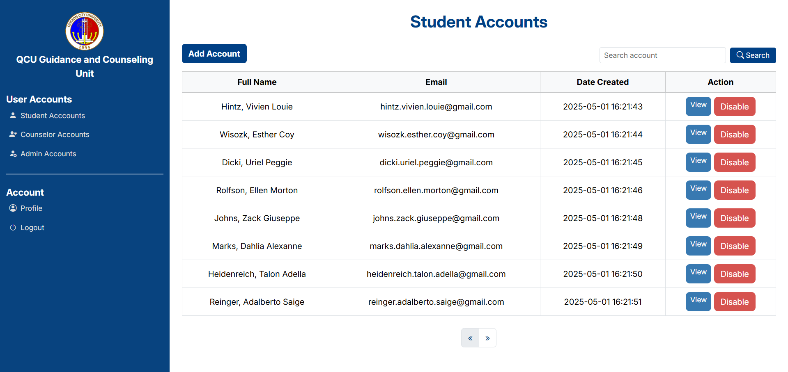
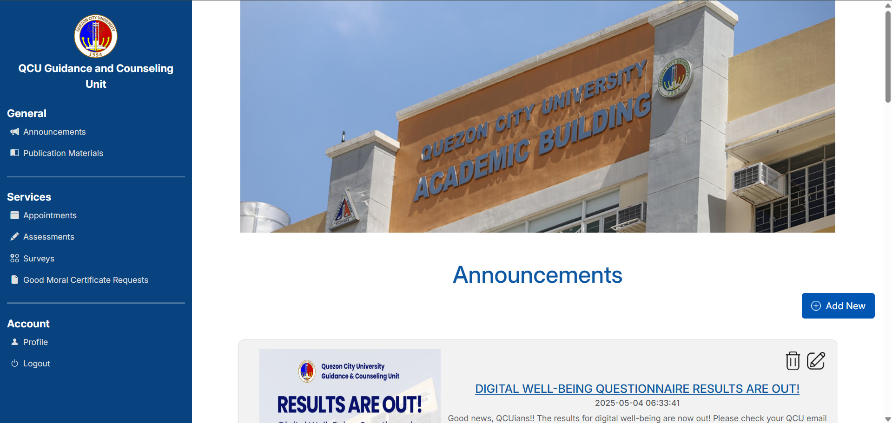
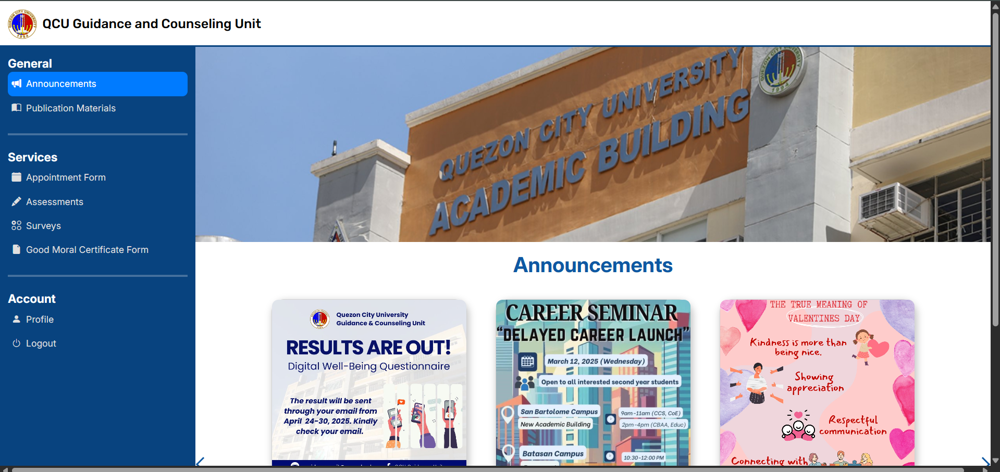

Integrated Service Portal
A specialized portal for QCU Guidance and Counseling featuring automated appointment scheduling, document requests, and a secure communication channel between students and counselors.
Video Demonstration
Showing the full end-to-end appointment and document request workflow.
Module Highlights
Admin Dashboard
Oversees the entire portal, manages users, and monitors system activity.
- ✓ User Account Management — register and manage student and counselor accounts.
- ✓ System-wide Analytics — monitor appointment trends and portal usage statistics.
- ✓ Audit Logs — track all user actions for security and accountability.


Counselor Dashboard
Dedicated workspace for managing student sessions and document requests.
- ✓ Appointment Management — view, approve, or reschedule student appointments.
- ✓ Secure Messaging — private communication channel with students.
- ✓ Session Notes — record and store confidential counseling session summaries.
Student Service Portal
The student-facing side of the portal for self-service guidance requests.
- ✓ Appointment Scheduling — book counseling sessions with available time slots.
- ✓ Document Requests — submit and track requests for guidance-related documents.
- ✓ Notification System — receive real-time updates on appointment status and document availability.

Technical Deep Dive
The Database
MySQL was used for its relational structure, making it ideal for managing linked data between students, counselors, appointments, and documents.
The Logic
PHP handled all server-side processing including session management, role-based access control, and secure form submissions.
The UI
Bootstrap provided a clean, responsive layout that works across all devices, keeping the interface accessible for all QCU students.